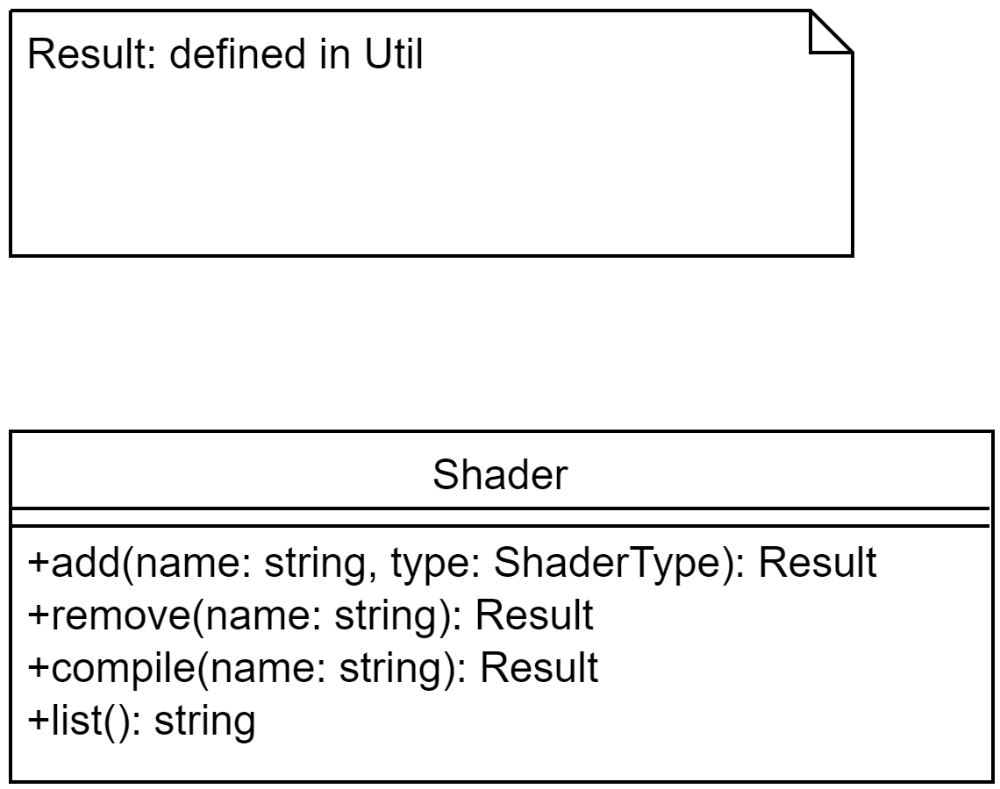

The engine tool (formally known as ShaderTool) in its current state has several disadvantages
The solution would be to rework the entire system to add a layer of abstraction within the engine tool. The best case would be to make a static library out of the core systems. The second system would then be build on top of this library to help the optimizer to optimize away anything unnecessary. The would reduce or remove problem 2, 4 and 5 entirely. If we now incorporate the shader and pipe systems into the resource system it would remove all build dependencies to the engine it self.
The core systems should consist of namespaces and the according methods in the namespace. Error handling should be done by return codes.
I think that the complete rewrite of the system is justified by the benefits we have from changing the language. The library change, on the other hand, is a minor problem. It could be replaced by niels lohman's json C++ API which we already use because of the communication problems seen in 5. Hence it introduced a lot of redundancy.
The usage of templates and macros is encouraged to further remove redundancy.
Status: Adopted
The next stage is to clean up and add all the dependency checks. Afterwards we have to face the shader module implementation, stated as following.
